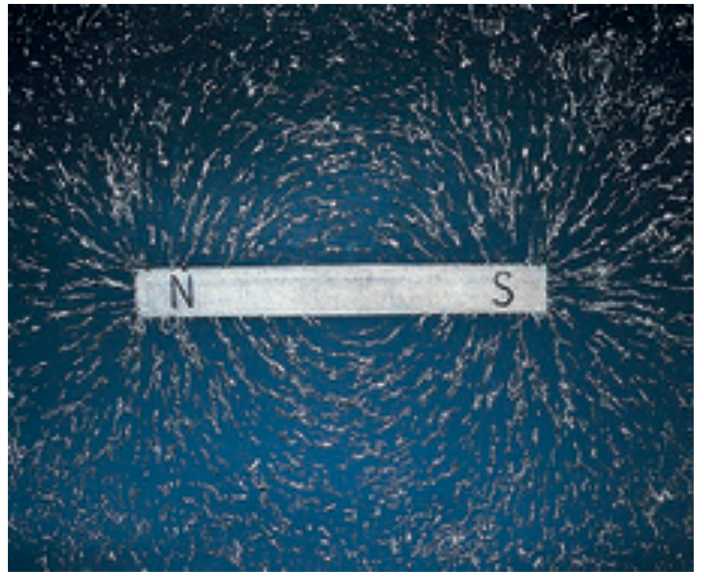
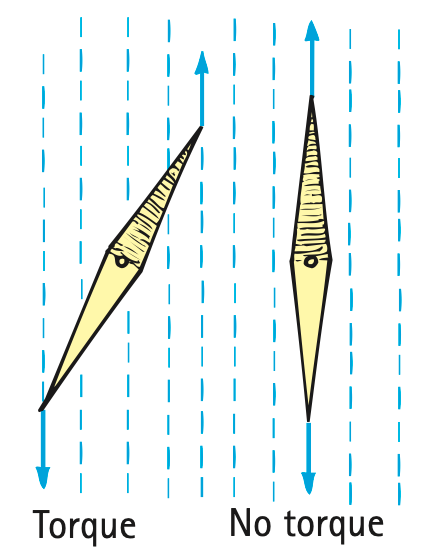

Magnetic Fields
If you sprinkle some iron filings on a sheet of paper placed on a magnet, you’ll see that the filings trace out an orderly pattern of lines that surround the magnet. The space around the magnet contains a magnetic field. The shape of the field is revealed by the filings, which align with the magnetic field lines that spread out from one pole and return to the other.
The direction of the field outside a magnet is from the north pole to the south pole. Where the lines are closer together, the field is stronger. The concentrations of iron filings at the poles of the magnet in Figure 24.2 show that the magnetic field strength is greater there. If we place another magnet or a small compass anywhere in the field, its poles line up with the magnetic field.

Magnetism is very much related to electricity. Just as an electric charge is surrounded by an electric field, the same charge is also surrounded by a magnetic field if it is moving. This magnetic field is due to the “distortions” in the electric field caused by motion and was explained by Albert Einstein in 1905 in his special theory of relativity. We won’t go into the details except to acknowledge that a magnetic field is a relativistic by-product of the electric field. Charged particles in motion have associated with them both an electric field and a magnetic field. A magnetic field is produced by the motion of electric charge.4
If the motion of electric charges produces magnetism, where is this motion in a common bar magnet? The answer is: in the electrons of the atoms that make up the magnet. These electrons are in constant motion. Two kinds of electron motion contribute to magnetism: electron revolution and electron spin. Electrons behave as if they revolve about the atomic nucleus and spin about their own axes like tops. In most common magnets, electron spin is the chief contributor to magnetism.

Every spinning electron is a tiny magnet. A pair of electrons spinning in the same direction make up a stronger magnet. A pair of electrons spinning in opposite directions, however, work against each other. The magnetic fields cancel. This is why most substances are not magnets. In most atoms, the various fields cancel one another because the electrons spin in opposite directions. But in such materials as iron, nickel, and cobalt the fields do not cancel one another entirely. Each iron atom has four electrons whose spin magnetism is not canceled. Thus, each iron atom is a tiny magnet. The same is true, to a lesser extent, for the atoms of nickel and cobalt. Most common magnets are made from alloys containing iron, nickel, and cobalt in various proportions.5

4 Interestingly, since motion is relative, the magnetic field is relative. For example, when a charge moves by you, there is a definite magnetic field associated with the moving charge. But if you move along with the charge so that there is no motion relative to you, you’ll find no magnetic field associated with the charge. Magnetism is relativistic. In fact, it was Albert Einstein who first explained this when he published his first paper on special relativity, “On the Electrodynamics of Moving Bodies.” (More on relativity in Chapters 35 and 36.)
5 Electron spin contributes virtually all of the magnetic properties in magnets made from alloys containing iron, nickel, cobalt, and aluminum. In the rare earth metals such as gadolinium, the orbital motion is more significant.